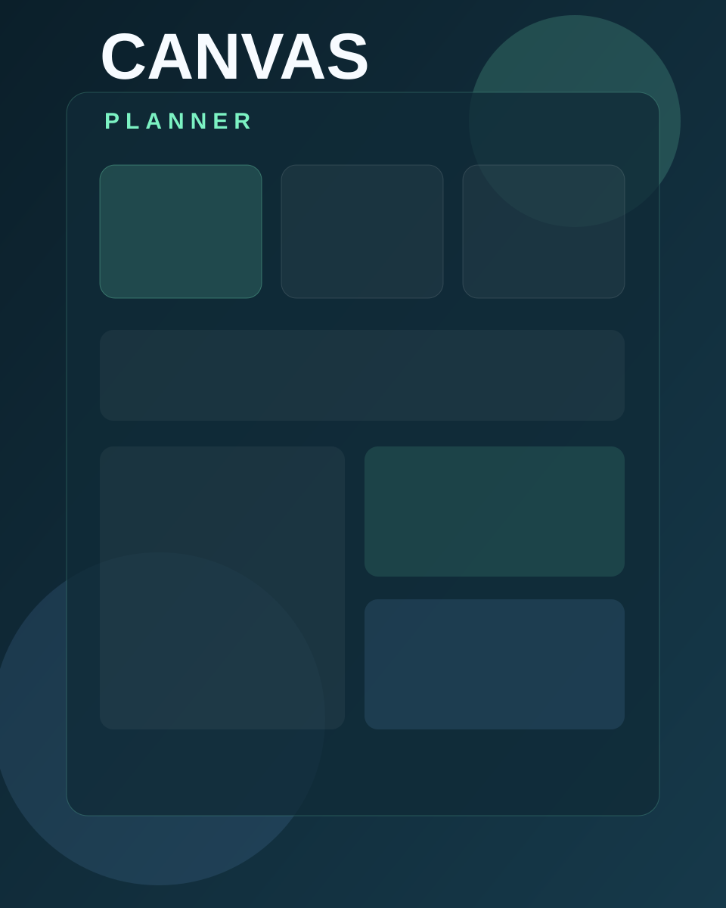
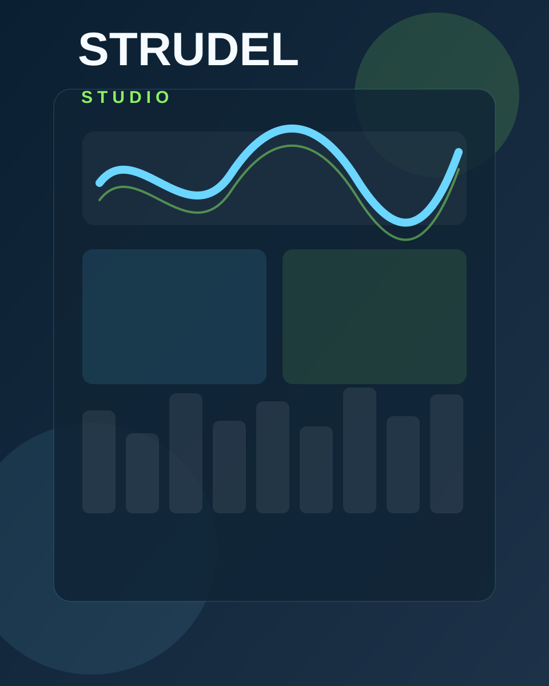
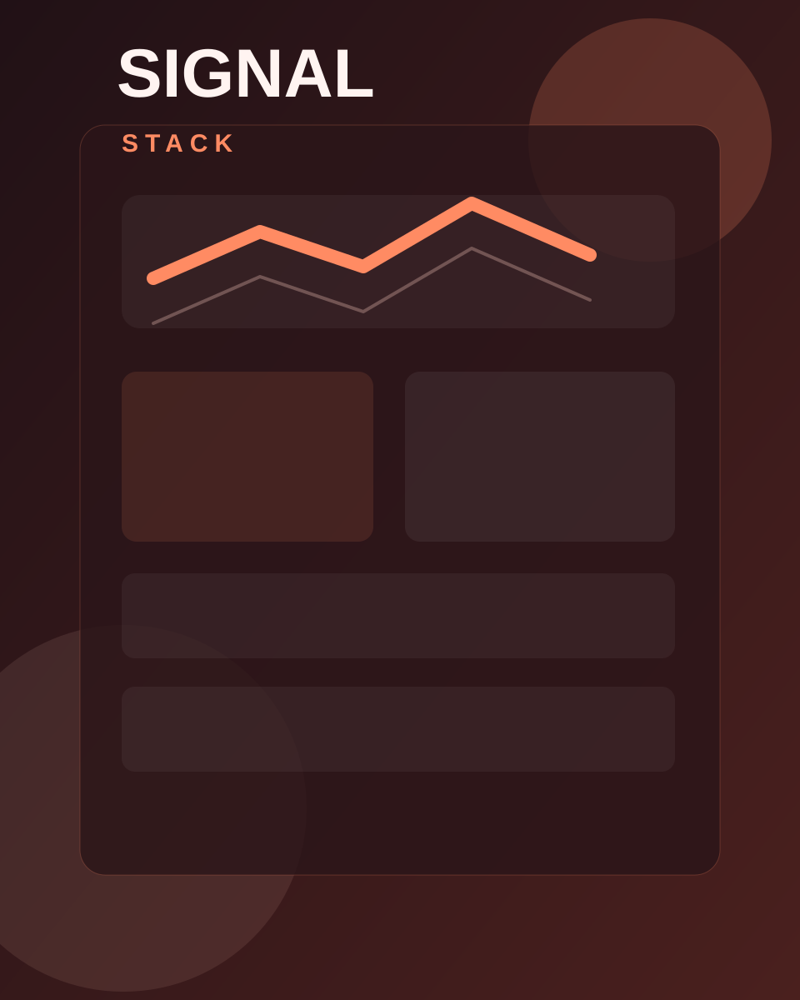
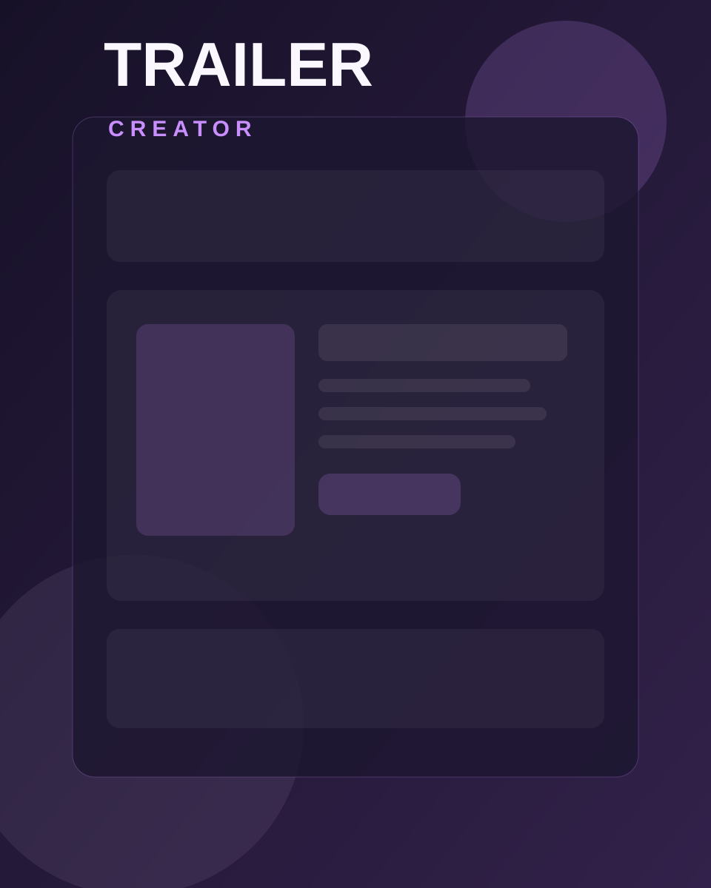
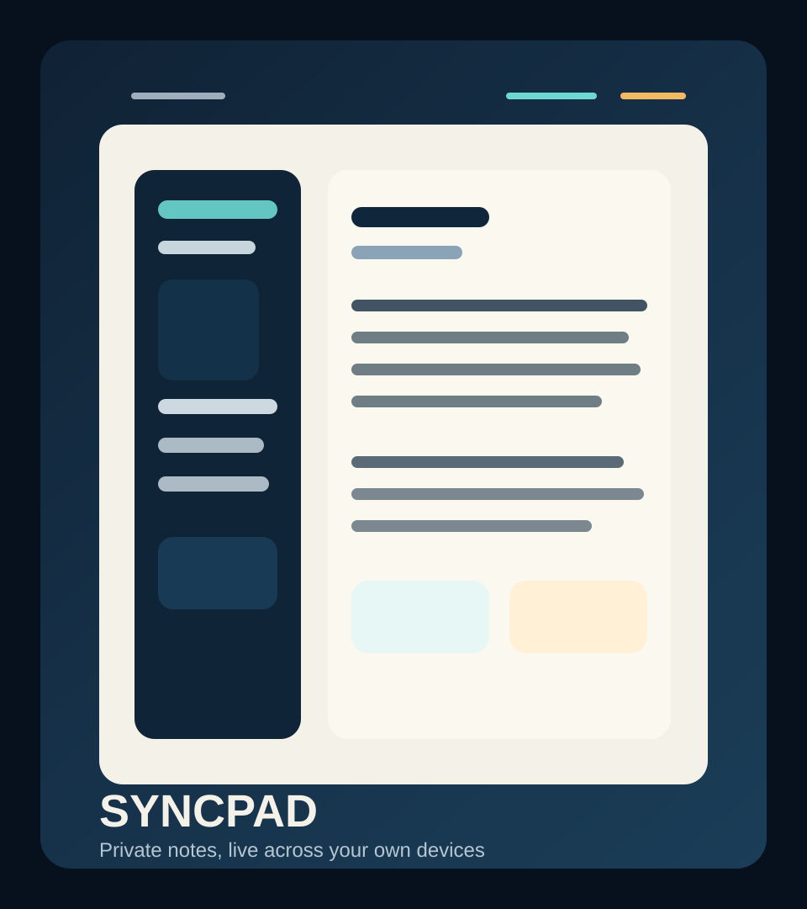

Public Tools Hub
Small tools. Sharp workflows. Real utility.
This is the public front door for the tool stack: visual planning, daily batch tracking, creator scheduling, trailer packaging, private note-taking, and the evolving coded-music studio. Most of the web tools here can now install cleanly on desktop or Android as lightweight PWAs. The goal is a premium launch surface, not a scratchpad.
- 6 active tools
- Planning, publishing, music, and private productivity workflows
- Installable web apps where that makes sense, private desktop paths where it does not

Status
Active tool build-out
Public layer
Live GitHub Pages links
Next unlock
Deeper product pages, screenshots, and final polish
Current Lineup
Six tools, six different jobs, one cleaner front door.
The hub is designed to hold the growing tool stack over time. Right now it introduces the main working tools and gives each one enough room to feel distinct.
Planning Tool
Canvas Planner
A visual planning surface for shaping image campaigns, boards, and task flow without getting buried in a generic project manager.
- Focused board-style workflow for visual work
- Clean local planning surface for batches and next actions
- Strong candidate for later hub-system migration
Planning Tool
MJ Calendar
A daily checklist calendar built around the real Midjourney batch flow: review images, videos, upscales, publish, and any extra recurring stages you need.
- Simple daily workflow tracking with notes
- Restore the standard review pipeline at any time
- Made for repeat batch work rather than generic scheduling

Publishing Tool
Signal Stack
A creator scheduling tool aimed at image and video publishing for Instagram, TikTok, and YouTube rather than the text-first planning tools already handled elsewhere.
- Offline-first queue builder with export and import
- Focused on visual and video publishing workflows
- Another strong candidate for later hub-system migration

Publishing Tool
Trailer Creator
A dossier-style workspace for shaping story notes, lore fragments, narration ideas, and trailer structure into something usable for packaging a release.
- Built around trailer hooks and supporting material
- Useful for turning fragments into a coherent package
- Designed as a practical internal utility, not just a showcase
Music Tool
Strudel Studio
The merged direction for the Strudel work: programmable music patterns, sample chopping, scenes, and recording, all moving toward one richer studio-style tool.
- Code-driven music creation with a friendlier control surface
- Beat designer, sample import, vocal chops, scenes, and recording
- Now consolidated into one clear public Studio path

Private Productivity Tool
SyncPad
A desktop-first notes app for your own devices, built to feel simple and immediate while syncing across your private network through one always-on host machine.
- Desktop app foundation with private live-sync mode
- Markdown writing, preview, find and replace, and backup tools
- Designed for personal cross-device use rather than public SaaS exposure
Approach
A public shell built to expand with every finished tool.
Showcase first
The site is already structured for richer tool pages, live demos, screenshots, and clearer public positioning as the tool stack grows.
PWA-ready web layer
It still runs cleanly on GitHub Pages, but the public web tools can now install as lightweight desktop or Android apps without adding a heavy build stack.
Ready for upgrades
Live app links, docs, onboarding, screenshots, feature pages, and later hub integrations can all slot in without rebuilding the whole thing.
Future Releases
This page becomes the release rail for every next tool.
As more tools become public-ready, this hub can carry live web links, screenshots, change notes, launch writeups, and deeper product pages without needing a total redesign.
- Music Video Generator
- Comic Book Generator
- Comic Book Video Generator
- Creative Canvas Editor